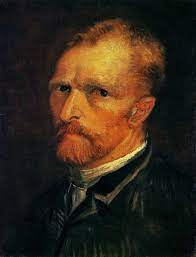

VINCENT VAN GOGH
HAYATI
Dünya resim sanatı tarihinin en önemli sanatçılarından olan Hollandalı art izlenimci ressam Vincent
Willem Van Gogh 30 Mart 1853 tarihinde Kuzey Brabant’ta Groot-Zundert şehrinde doğmuştur.
Van Gogh, üst orta sınıf bir ailenin çocuğudur. Küçük yaşlardayken sessiz, saygılı ve sakin
görünümlü bir yapısı vardır. Resim yapmaya o yaşlarda başlamıştır. Gençliğinde sanat simsarı olarak
çalışmıştır. Bu dönemde ailesi tarafından Londra’ya gönderilmiş ancak orada bunalıma girmiştir.
Belçika’ya döndükten sonra dine ilgi duydu ve bir süre misyoner olarak çalıştı. Sağlığı bozulunca
ailesinin yanına döndü. 1881 yılında resim yapmaya başladı. Küçük kardeşi Theo onu maddi olarak
destekledi...
İlk çalışmaları genellikle natürmortlar ve çalışan köylülerin tasvirlerinden oluşmuştur ve bu
çalışmalarda daha sonraki eserlerinin ayırt edici niteliği olan canlı renkler görülmez. 1886 yılında
Paris’e taşınmıştır. Burada izlenimci hassasiyete karşı tepki gösteren ve aralarında Émile Bernard
ile Paul Gauguin’in de bulunduğu avangart üyeleriyle tanıştı. Çalışmaları geliştikçe natürmortlara
ve yerel manzaralara yeni bir yaklaşım getirdi. Resimlerinde daha parlak renkler kullanmaya başladı
ve daha sonra 1888’de Fransa’nın güneyinde kaldığı Arles’da ustalaşacağı kendine özgü bir üslûp
geliştirdi. Bu dönemde zeytin ağaçları, selviler, buğday tarlaları ve ayçiçekleri de tuvallerine
konu olmaya başladı.
Psikotik epizodlardan ve delüzyonlar nedeniyle zihin sağlığı giderek bozulan sanatçı buna karşın
fiziksel sağlığına özen göstermemiştir. Aşırı alkol tüketimi ve düzensiz beslenme nedeniyle sağlığı
giderek bozulmuştur. Gauguin ile arkadaşlığı bir ustura ile yolunu kesmesi ve öfke nöbeti sonucu sol
kulağının bir kısmını keserek yaralaması sonucu sona ermiştir. Bir dönem Saint-Rémy’de olmak üzere
akıl hastanelerinde kalmıştır. Hastaneden kendi isteğiyle ayrıldıktan sonra Paris yakınlarında
Auvers-sur-Oise’da Auberge Ravoux’ya taşındı ve homeopati uygulayan doktor Paul Gachet tarafından
tedavi edilmeye başladı. Depresyonu devam etti ve 27 Temmuz 1890’da, henüz 37 yaşında iken kendini
göğsünden vurmuş ve iki gün sonra yaraları nedeniyle ölmüştür.
Van Gogh’a bütün yaşamı boyunca hep deli gözüyle bakılmıştır. İntihar ettikten sonra büyük bir ün
kazanmıştır. Resim üslûbunun ögeleri fovistler ve Alman dışavurumcuları tarafından kullanılmaya
başlanmış ve 20. yüzyıldan itibaren ünü artarak devam etmiştir. Van Gogh romantik, acı çeken sanatçı
idealini simgelediği önemli fakat hüzünlü bir ressamı olarak nitelendirilmiştir.